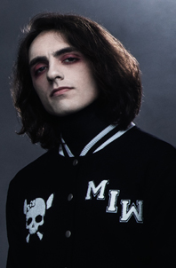

Band Members
Chris Motionless (Lead Singer)[since 2005]
Ricky Olson (Guitar) [2009-persent]
Justin Morrow (Bass Guitar) [2019-persent]
Ryan Sitkowski (Lead Guitar) [2008-persent]
Vinny Mauro (Drummer) [2014-persent]
History of Motionless in White
Formation and early years (2005–2009)
Motionless in White was founded in 2005 by members Chris Motionless, who played guitar and lead vocals, Angelo Parente on drums, Frank Polumbo on guitar and Kyle White on bass during high school. They incepted many other titles into the group until finally settling on what would be Motionless in White. Chris Motionless and other members have noted bands such as Poison the Well, Slipknot, Marilyn Manson, Johnny Cash, Depeche Mode, and other musical groups as their inspiration. In 2005 they released their self-distributed demo.
Within the year after the release of their demo, new member Josh Balz was added as the band's keyboardist, Frank Polumbo took over on bass and new members, Michael Costanza and Thomas "TJ" Bell, were added to the band as the new guitarists, moving Chris Motionless solely to lead vocals. the band was discovered by Zach Neil while performing at a local nightclub called The Staircase. Neil signed the band first to management and then later to his record label Masquerade recordings. They recorded their first EP The Whorror which was produced by Zach Neil and mixed by Dan Malsch and released it through Masquerade Recordings/Warner music group in 2007.
After touring in support of The Whorror, Motionless in White had written enough songs to complete a full-length album. The album was named When Love Met Destruction. When Love Met Destruction was recorded in 2008 initially at Soundmine recording studio then finished at Zach Neil's home by Dave Cutrone and Zach Neil, and was released the same year on Masquerade Recordings. Neil added the band to his stage on the Warped tour with the new record in hand and the band quickly caught the attention of Shawn Milke from Alesana who offered to manage the band. Shortly thereafter Bob Becker of Fearless Records contacted Zach Neil to make an offer to buy the band's recording contract and sign the band to Fearless.The band and Neil agreed and Tragic Hero was offered to incubate the first official release to help grow the band leading up to their Fearless debut. The band was never actually signed to Tragic Hero Records.
The band parted ways with guitarist Michael Costanza and brought in current guitarist Ryan Sitkowski as his replacement. Despite being signed to Fearless before the months leading up to the release of the EP form of When Love Met Destruction, it was distributed through Tragic Hero on February 17, 2009. The song "Ghost in the Mirror" was made as the band's first ever single and had a music video produced for it.
Creatures and line-up change (2009–2011)
After the release of When Love Met Destruction, bassist Frank Polumbo departed Motionless in White due to unknown reasons, leaving Bellevue, Washington native, Ricky "Horror" Olson as their new permanent bass player in October 2009. Months later, Motionless in White entered the studio during May 2010 to record their debut full-length, Creatures with Andrew Wade as the chosen producer. The record's first single, "Abigail", was released premiered on Revolver Magazine in August 30 and was the released on iTunes the day after. A music video for the song was released a few months afterwards, along with following music videos over the next 2 years for title track "Creatures", the first track of the record "Immaculate Misconception" and a live music video for "Puppets (The First Snow)" which was filmed during the band's summer on The All Stars Tour in 2011.
Creatures was released on October 12, 2010 through Fearless, and claimed the 175th slot on the Billboard Top 200 charts, and No. 6 on the Heatseekers chart.
On Wednesday May 4, 2011, guitarist Thomas Joseph "TJ" Bell was fired from the band. Reasons for the matter explained from Bell's perspective were that while he was handling bass substitution duties for Escape the Fate, he was expected to meet along with the rest of Motionless in White in Orlando, Florida by that tour's end. According to the band, Bell left in the middle of Motionless in White's tour schedule to fill-in as a bassist for Escape the Fate and also did not inform the rest of the members early enough in advance that he would not be available during those weeks. This action forced the band to be without their rhythm guitar parts during their performances. Motionless in White stated "If our live performance didn’t heavily depend on having 2 guitarists then it wouldn’t have been a huge deal to us... but unfortunately having one guitar player in a band like ours causes your show to suffer greatly. We agreed to let TJ go," along with an explanation about how they experienced many disagreements with Bell throughout the years of being a band.
After Bell's departure, Olson then switched his position in the band from playing bass to rhythm guitar, which then left the group in-audition, once again, for a new bass player. In the tours Motionless in White performed after Olson's switch to rhythm guitar, a man with an unknown name began playing bass, finally confirmed as being Devin Sola, who now goes by "Ghost", a substitute bassist. Sola was officially confirmed as the band's new bassist on November 27, 2011.
In early 2012, Motionless in White contributed to the Kerrang! Metallica The Black Album: Covered on the song, "My Friend of Misery.
Motionless in White decided on working with two separate producers to accomplish a very wide array of sounds and styles for Infamous. It was then announced that Infamous was to be produced by Jason Suecof and musician Tim Sköld. On September 25 "Devil's Night" was released as the first single for the album. On October 9, their second single "If It's Dead, We'll Kill It" was released. On November 13, 2012, the music video for the single "Devil's Night" was released, along with the full album itself. Infamous initially hit No. 53 on the Billboard 200, No. 19 on Top Rock Albums, No. 9 on Top Independent Albums, and No. 5 on Top Hard Rock Albums.
Motionless in White's ex-drummer, Angelo Parente, announced his departure from the band on March 11 via Tumblr, saying 'After doing this since I was 17, the nonstop touring, and everything else that comes with the life of a musician has finally caught up with me.'. He has left the band on good terms, and there is no sign of internal rifts.[25] Brandon Richter formally of 'The Witch Was Right' was announced as the replacement drummer on April 23, 2013. This action left Chris Motionless as the band's last original member.
On April 23, the band released the third single from Infamous, "America", accompanied by a lyric video. On June 3, another video, directed by Slipknot percussionist Shawn Crahan, was released for the single. The video also starred Slipknot percussionist Chris Fehn. On June 11, 2013, Motionless in White released the Deluxe Edition of Infamous, featuring remixed and remastered versions of all the original tracks, alongside two new songs, remixes by Celldweller, Combichrist and Ricky Horror, and re-recorded drums by Richter.
On January 23, 2014, the band announced a short headlong tour in March with The Plot in You, Like Moths to Flames, For the Fallen Dreams and The Defiled with For Today appearing in San Antonio. Following the tour the band would enter the studio to work on their follow-up to their 2012 album, Infamous.
On February 5, Motionless in White was announced to play the Vans Warped Tour on the main stage. The same day, the band confirmed that they will be covering "Du hast" by Rammstein for the Punk Goes... compilation series, Punk Goes 90s Vol. 2. Later that month, drummer Brandon Richter released a statement that he will no longer be part of the band; however, he has thanked all of the support he has gained and has left on good terms, although he won't give out any specific reasons to leaving the band.
In an interview with Rock Sound magazine, Chris Motionless expressed that recording the third album was much easier compared to Infamous as "...the timeframe worked against me, and there was an inner conflict going on, trying to move into a different style of music and making a lot of mistakes as I went." He stated that the album's sound will contain the aggressiveness 'Creatures' had which 'Infamous' lacked in and will also have a more consistent style.
On April 23, 2014, the band's third studio album, Reincarnate, was announced through social media, with an intended release date of September 16, 2014. The band stated that they remain as a quintet and will be working with touring and session drummers. On June 11, Fearless Records released a video featuring the album's artwork and contained a teaser for their next upcoming single of the same name, which was to be released on July 1 however was delayed to July 8. The band was announced as a support act for A Day to Remember's tour titled Parks & Devastation Tour that takes place throughout September and October, and will be supporting them alongside Bring Me the Horizon and Chiodos. The band also announced a co-headline tour with gothic metal band Lacuna Coil in Europe, with the gothic metal band Devilment (fronted by Cradle of Filth frontman Dani Filth) supporting them. The tour started at the end of October continuing through November.
Vocalist Chris Motionless has stated that their new album will not be released through Fearless Records. On June 23, 2016, Motionless In White released the single titled "570", from the band's forthcoming studio album, which will be released via Roadrunner Records. In the fall of 2016, the band embarked on the Nocturnal Underground tour with Breaking Benjamin and Korn. On October 31, Roadrunner announced the album was to be titled Graveyard Shift. The band reached out to the fans with a contest to design the new album's artwork.
On January 10, 2017, keyboardist Josh Balz announced his departure from the band after 10 full years. He cited that he wanted more time available to run his oddities parlor, "The Strange and Unusual".
On January 26, 2017, the band released the second single from Graveyard Shift, titled "Eternally Yours". A day later it was revealed that Graveyard Shift is set to be released on May 5, 2017. The band also revealed they were opening an artwork contest for the new album, the winner of which would have their artwork featured for Graveyard Shift.
On March 3, 2017, the band revealed the album's official artwork created by Crystal Johnson and tracklist, followed by the release of their third single, "LOUD (Fuck It)".
On April 30, 2017, Motionless in White premiered their song "Rats", a few days before the initial album drop. After the album was released, the band embarked on the Half God Half Devil tour with In This Moment, touring across the United States and to multiple areas around Europe.
The band embarked on the US leg of their headlining tour; The Graveyard Shift Tour, running from September–October 2017 and will bring the tour to Europe in early 2018. Motionless In White was joined on the US portion of this tour by Miss May I and The Amity Affliction, along with special guest, William Control. As well as European/US legs from January to March 2018.
On May 4, 2018, the band announced the departure of longtime bassist Devin "Ghost" Sola, citing personal mental health problems as a major factor. Former guitarist, TJ Bell, was later announced to be filling in, in regards to the duties needed for the Summer Warped Tour festival.
On May 6, 2018, Chris Motionless announced via Instagram that a new record would be released in 2019. He claimed that he, along with Ryan Sitkowski and Ricky Olson, would begin full-time writing prior to touring with Warped Tour that summer.
Throughout the summer of 2018, the band embarked on the final cross-country run of Vans Warped Tour, spanning from June 21 to August 5, 2018. After the departure of Devin Sola, the band reunited with former guitarist TJ Bell for the tour. Once the tour wrapped, the band took the rest of the year off, with the exception of a few festivals, Halloween shows, and a club show in their hometown of Scranton, to work on the upcoming album. For their final appearances of 2018, Justin Morrow of Ice Nine Kills toured with them on bass guitar.
In early March, the band announced they would be touring over the summer with Alice Cooper and Halestorm. A few days later, they announced they would be embarking on a co-headliner with Atreyu over the course of April and early May. The day prior to the Spring Invasion tour with Atreyu beginning, the band began teasing new music through their social media accounts.
On March 24, 2019, Motionless in White announced via Instagram that Ice Nine Kills member, Justin Morrow would be leaving Ice Nine Kills and joining Motionless in White full-time on bass guitar.
On April 17, the band announced their new album Disguise set for release on June 7, 2019. On the same day, they released two singles off of the album titled "Disguise", which had been premiered at Earthday Birthday in Orlando a few days prior, and "Brand New Numb".
On May 10, the band released their third single "Undead Ahead 2: The Tale of the Midnight Ride" and its corresponding music video.
On June 5, a few days before the album was due to drop, the band premiered the song "Thoughts & Prayers" on BBC's Radio 1's Rock Show with Daniel P. Carter. This was the first appearance of lead guitarist Ryan Sitkowski performing vocals on a record. On June 27, the band released a corresponding music video for their second single of the album, "Brand New Numb".